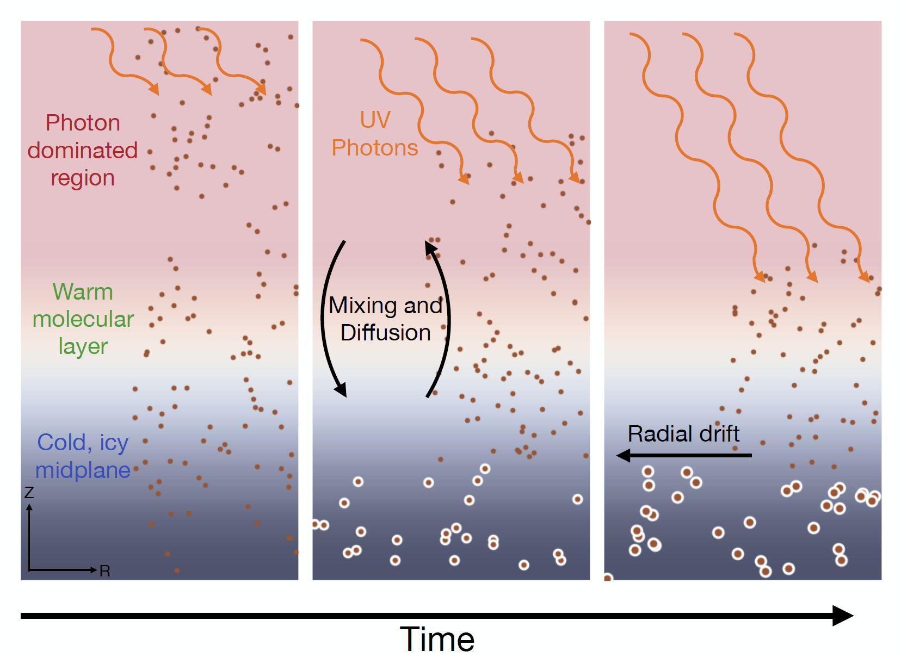

Current Research
Protoplanetary disks (PPDs) are the sites of planet formation, and it is often assumed that planets inherit the composition of the disk from which they form. However, planet formation is a prolonged process, feeding back onto the disk structure, composition, and subsequent planet formation. Solids grow from sub-micron sized dust to kilometer sized planetesimals and eventually planets. Giant planets carve gaps in their host disk trapping dust and pebbles in rings. Meanwhile, the disk is constantly chemically evolving, with observations showing they are host to many molecules including sugars, nucleotides, and complex organic molecules — some of the precursors to biology.
How do these ongoing feedback processes affect the composition — and eventual habitability — of the planet forming within? Was our own Solar Nebula similar to observed PPDs around other stars? What can we learn about the origin of life on Earth from astrochemical observations and what does this mean for life elsewhere?
These are some of the questions I aim to answer using an interdisciplinary approach to planet formation, combining the fields of geology, astronomy, chemistry, and physics. To study these questions, I develop computational models to simulate the disk in realistic ways, accounting for the feedback inherent in planet formation. See below for some highlighted research topics and relevant papers.
I am always interested in new projects and collaborations! Have an interesting idea you would like to work together on or would you like to learn more about these research projects? Feel free to reach out: vanclepper@wisc.edu
Disk chemistry and dyanmic feedbacks

Protoplanetary disks are constantly evolving. Growth of dust into pebbles can drastically alter the chemical environment of the gas disk, feeding back onto the observed molecular tracers and the composition of the forming planetesimals. To examine the combined feedback of chemistry and dynamics during dust growth I developed CANDY to examine the combined Chemistry ANd DYnamics within PPDs. Using this model, I have shown that solids and the gas can become disconnected, with ice species being efficiently sequestered in larger pebbles while the gas-phase grows increasingly dominated by UV photochemistry. Ongoing research is seeking to explore what this means for further disk, meteorite, and cometary observations to better place our Solar Nebula in the context of other observed disks.
See:
Van Clepper et al. 2022Ciesla et al. 2026
Solid dynamics in structured disks

As massive planets grow, they carve out a gap in the surrounding disk, halting the radial transport of solids. I am interested in studying the detailed trajectory of these solids has they move both radially and vertically through a disk with a growing massive planet. I have developed a new software, ParTrace, to track the trajectories of small solids as they interact with the 3D gas flows created by an embedded giant planet. In two papers, we showed that while giant planet can halt the inward drift of larger pebbles, small grains can "filter" past the giant planet. This filtering efficiency depends on the disk viscosity and planet mass, and by comparing with meteorites, we can better understand out own presolar nebula, and how it compares with protoplanetary disks around other stars.
We also show that as small dust grains filter past the giant planet, they are lofted near the surface of the disk, where ice sublimation occurs. This may enrich the disk with volatiles near the growing giant planet, enriching its atmosphere with volatiles relative to the surrounding disk. We name this the dust recycling and icy volatile enhancement (DRIVE) effect.
See:
Price, Van Clepper & Ciesla 2024Van Clepper, Price & Ciesla 2025
Van Clepper et al. 2025